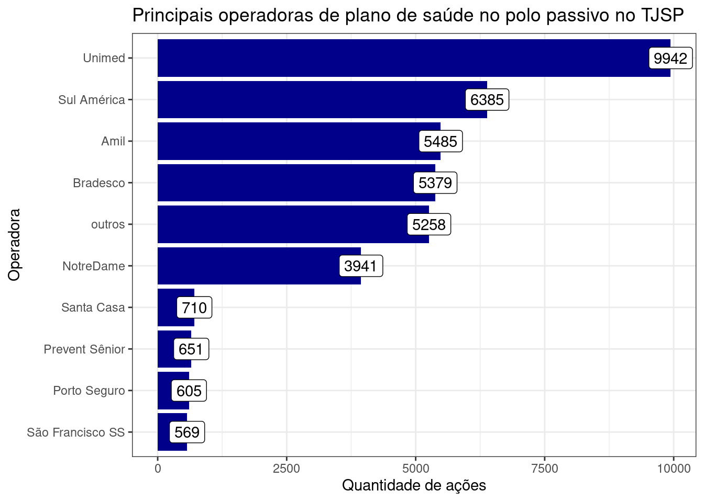
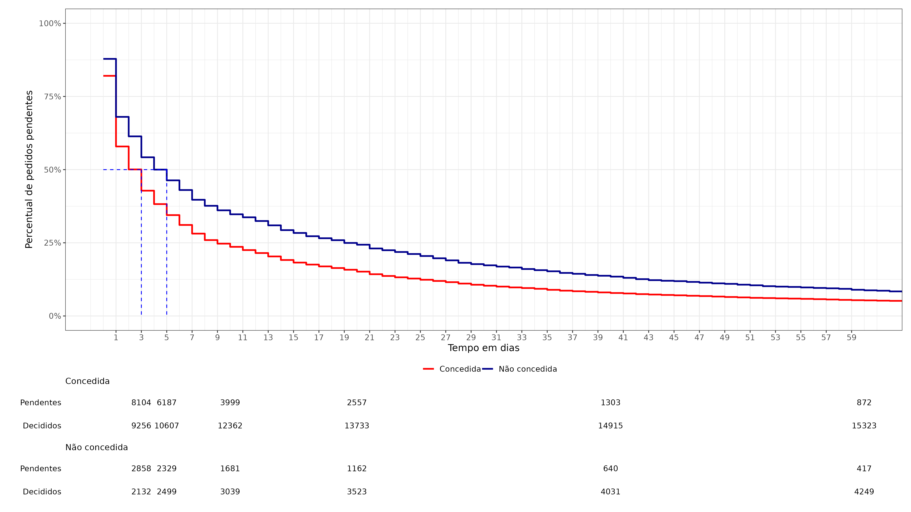

4 Resultados
4.1 Principais assuntos
O gráfico abaixo mostra os quantitativos dos principais assuntos.

4.2 Polo passivo
O gráfico abaixo mostra as principais operadoras presentes no polo passivo. Houve junção de alguns nomes. Por exemplo, todas as unimeds foram classicadas como “Unimed”. O mesmo ocorreu com o Bradesco, Itaú e outras. Por vezes, houve variações nos nomes. O número do CNPJ também foi utilizado para unificar as categorias. As operadoras com menos de 65 ações contra elas foram mantidas na categoria outros. Havia um número grande de operadoras com o número de ações judiciais entre 50 e 65 e sua inclusão inviabilizaria a visualização apropriada.
4.2.1 Tabela 1: Principais operadoras de saúde acionadas no TJSP
parte | freq |
|---|---|
Unimed | 9,942 |
Sul América | 6,385 |
Amil | 5,485 |
Bradesco | 5,379 |
outros | 5,258 |
NotreDame | 3,941 |
Santa Casa | 710 |
Prevent Sênior | 651 |
Porto Seguro | 605 |
São Francisco SS | 569 |
São Cristóvão | 434 |
Cassi | 379 |
Santa Helena | 365 |
Qualicorp | 342 |
Iamspe | 325 |
Itaú | 314 |
Hapvida | 267 |
Trasmontano | 263 |
Caixas beneficentes | 255 |
Cesp | 234 |
Ana Costa | 215 |
Sobam | 198 |
Mediservice | 175 |
Sompo | 170 |
Cruz Azul | 166 |
Blue Med | 151 |
UNIÃO FEDERAL - PRU | 148 |
Ameplan | 135 |
Beneficência portuguesa | 124 |
Postal Saúde | 102 |
Geap | 95 |
São Lucas | 95 |
Samaritano | 93 |
Green Line | 92 |
Omint | 90 |
Hb Saúde | 85 |
Allianz | 84 |
Biovida | 80 |
Unihosp | 78 |
QSaúde | 71 |
Medical Health | 70 |
Usisaúde | 69 |
Economus | 67 |
4.2.2 Tabela 2: Taxa de demandas por 1000 beneficiários
Operadora | Demandas | Beneficiarios | Demandas por mil beneficiários |
|---|---|---|---|
Cassi | 379 | 1,938 | 195.562 |
Caixas beneficentes | 255 | 52,600 | 4.848 |
Allianz | 84 | 29,653 | 2.833 |
Trasmontano | 263 | 102,914 | 2.556 |
Economus | 67 | 27,457 | 2.440 |
Ana Costa | 215 | 90,204 | 2.383 |
Sul América | 6,385 | 2,728,691 | 2.340 |
Amil | 5,485 | 2,670,379 | 2.054 |
Itaú | 314 | 155,977 | 2.013 |
Cesp | 234 | 117,757 | 1.987 |
Sobam | 198 | 107,090 | 1.849 |
Santa Helena | 365 | 203,563 | 1.793 |
Ameplan | 135 | 79,104 | 1.707 |
Blue Med | 151 | 99,717 | 1.514 |
Bradesco | 5,379 | 3,729,585 | 1.442 |
Unihosp | 78 | 58,661 | 1.330 |
Santa Casa | 710 | 540,245 | 1.314 |
Porto Seguro | 605 | 461,333 | 1.311 |
Mediservice | 175 | 135,785 | 1.289 |
Biovida | 80 | 66,362 | 1.206 |
Prevent Sênior | 651 | 562,157 | 1.158 |
Omint | 90 | 78,027 | 1.153 |
NotreDame | 3,941 | 3,914,781 | 1.007 |
Samaritano | 93 | 130,179 | 0.714 |
Unimed | 9,942 | 19,284,651 | 0.516 |
Usisaúde | 69 | 192,153 | 0.359 |
Geap | 95 | 284,782 | 0.334 |
outros | 5,258 | 61,115,642 | 0.086 |
Hapvida | 267 | 4,217,189 | 0.063 |
4.2.3 Gráfico : Taxa de demanda por 10 mil beneficiários

4.3 Evolução das demandas no tempo
O gráfico abaixo mostra a frequência mensal de demandas judiciais contra operadoras de planos de saúde ao longo dos anos. A linha tracejada representa a média móvel de seis meses.

O sistema de saúde sofreu entre 2019 e 2023 sucessivas intervenções de diversas naturezas, todas com potencial de elevado impacto nos litígios. A primeira intervenção foi de natureza sanitária, a pandemia. A segunda intervenção foi de natureza judiciária, a decisão do STJ. A terceira intervenção foi de natureza legislativa, a promulgação da lei XXX.
Essa sucessão de intervenções em um período tão curto dificulta inferências sobre as possíveis causas nas variações drásticas observadas na quantidade de casos no período analisado. Por essa razão, restringiremos nossos comentários a aspectos meramente descritivos no momento, a fim de aguardar pelo menos até o final de 2023 para realizar novas análises.
A maior variação na quantidade de ações é observada nos casos envolvendo tratamentos. A quantidade de pedidos relacionados a medicamentos apresenta maior estabilidade. Isso se deve a [….].
As ações relacionadas a pedidos de medicamento são inferiores em relação aos de tratamento e oscilam em torno de 125 por mês. Em janeiro de 2019 houve XX pedidos. Essa quantidade aumenta até atingir o ápice de ZZ pedidos em dezembro de 2020. Ao longo de 2022 parece ocorrer uma queda, chegando a XX em dezembro daquele ano. Já em 2023 as quantidades voltam a subir chegando a XXX em maio.
As ações relacionadas a pedidos de tratamento apresentam um comportamento distinto. Em janeiro de 2019 foram XXX ações. Esse número aumenta até chegar a XXX em março de 2021. A quantidade mais elevado foi de XXX ações distribuídas em fevereiro de 2022, seguida de uma queda até XXX em janeiro de 2023, quando a quantidade volta a crescer até XX em maio de 2023.
A variação nas quantidades observadas podem estar associadas às intervenções mencionadas acima. O início da pandemia em março de 2020 parece associado a uma estabilização na quantidade de pedidos. Essa estabilidade parece se romper em março de 2022, quando a quantidade de pedidos começa a cair. A queda pode estar associada à proclamação parcial de julgamento pela taxatividade do rol da ANS pelo STJ, o que desincebtivaria a propositura de ações fora do rol.
Por outro lado, tanto os pedidos de tratamento como de medicamentos aumentam a partir de janeiro de 2023. A lei 14.454 que torna o rol exemplificativo foi promulgada em setembro de 2021. No entanto, é esperado um intervalo entre 60 e 90 dias até que a lei surta efeitos na quantidade de ações, considerando o tempo necessário para que os pacientes procurem seus advogados e estes consigam organizar os documentos e preparar a ação para distribuição.
Então, existe a possibilidade de o aumento na quantidade de ações observado ao longo de 2023 estar associado à nova lei. No entanto, duas ressalvas devem ser feitas. Primeiro, as quantidades observadas em 2023 (após a lei) ainda são muito inferiores àquelas observadas até 2021. Segundo, o pouco tempo transcorrido entre a promulgação da lei e a realização desta análise não permite chegar a uma conclusão robusta sobre a questão.
4.4 Pedidos de tratamento conforme a doença
Para identificar as doenças objetos dos pedidos de tratamento, foi necessário baixar as petições iniciais, nos procedimentos comuns ordinários e os ajuizamentos, nos procedimentos dos juizados especiais cíveis. Foi possívei indentificar as doenças conforme o CID em 19.474 processos. Vale dizer que, alguns pedidos incluem mais de uma doença.
4.4.1 Doenças

4.4.2 Grupos de doenças

4.5 Pedidos de liminares

4.6 Análise de duração do processo
A análise de duração do processo considerou apenas as decisões em que constava, na movimentação, a descrição de decisão liminar ou de antecipação de tutela. Muitos pedidos, especialmente aqueles realizados nos juizados especiais cíveis, não incluem o pedido de liminar. A duração do processo foi condicionada ao teor da decisão e ao assunto. É possível notar que pedidos não concedidos demoram mais para serem apreciados. Isso ocorre porque, provavelmente, a não concessão leva a uma dilação probatória e os pedidos que levam à concessão estão melhor instruídos. O gráfico abaixo mostra o tempo entre a judicialização e a apreciação liminar condicionado à decisão
